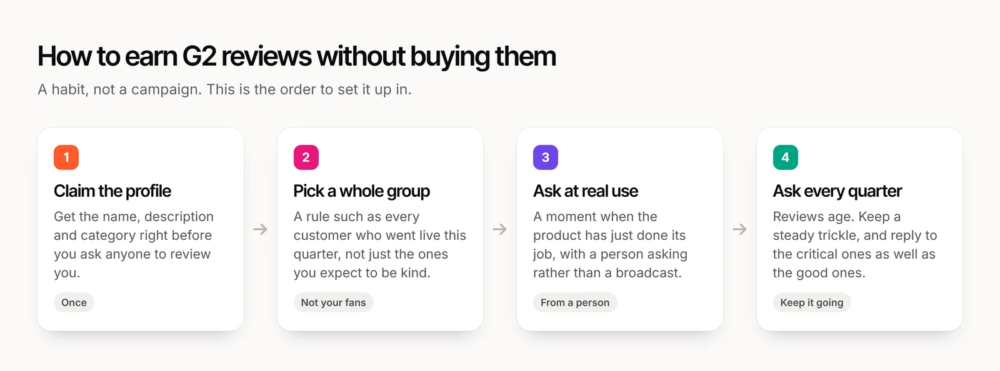

On this page
To earn G2 reviews for a SaaS product, ask every customer in a defined group at a moment when they have just used it. Offer a thank-you only if it does not depend on what they write. A product needs at least 10 reviews in a category to appear in that category's G2 Grid report, which is where the badges come from. Those reviews now reach buyers through AI answers too, because tools like ChatGPT cite G2.
This guide covers how G2 checks reviews, why AI tools read them, what the badges require, the rules on incentives, the costs and the mistakes that cost you reviews.
I lead brand, PR and partnerships at Fourward, and my work covers reviews and listings, so I have a stake in this topic. Every G2 rule below comes from G2's own pages, checked on 25 November 2026. Most AI citation numbers come from G2 itself, and G2 sells to software vendors, so read them with that in mind.
- A G2 review is a rating and written opinion of a business software product by someone who uses it, checked by G2 before it is published.
- A product needs at least 10 reviews in a category to be included in that category's G2 Grid report.
- G2 allows a thank-you worth up to $100, but only if it never depends on whether the review is positive or negative.
- Asking only happy customers breaks G2's rules. Your staff and your competitors' staff may not review your product.
- G2 says it is the most cited B2B software platform in AI search, but one study found review counts explain less than 2% of the variance in AI citations.
What G2 reviews are and how G2 checks them
G2 is a review site where business buyers compare software by category. Users rate a product and write about what works and what does not. G2's page About G2's Reviews, Data, and Rankings explains what happens before a review goes live.
- Two checks. An automatic filter screens each submission first. Next, in G2's words: "G2's moderation team then manually checks each remaining review." G2 says "No review is published on G2 without passing both stages."
- A visible label for gifts. G2 says "Any G2 review confirmed as incentivized carries an Incentivized label." An incentive is a thank-you gift, such as a gift card, offered for writing a review.
- No paid ranking. The same page says "Paying G2 does not improve a product's ranking."
So the only way to get more reviews is to get more real users to write one. The rest of this guide is about getting those users to say yes.
Why G2 reviews now feed AI answers
Buyers now ask AI tools such as ChatGPT, Gemini and Perplexity which software to shortlist. G2 says these tools cite it often. The numbers below come from G2's own publications, so treat them as G2 reporting on itself.
- G2 writes for AI readers. Its rankings page, updated in September 2026, says: "Everything on this page is published for human readers and machine readers alike."
- ChatGPT cites G2. In a September 2025 announcement, G2 said it ranked "4th among the top 10 sources on ChatGPT".
- G2 claims first place for software questions. A June 2026 G2 article calls G2 "the most cited B2B software platform in AI search, with 22.4% influence on software-related queries".
- Buyers still read review sites directly. G2's 2026 Buyer Behavior Report surveyed more than 1,000 B2B software buyers and decision-makers. It found review sites, at 38%, were the top source shaping which vendors reach a buyer's shortlist.
How much reviews move AI answers
Kevin Indig analysed 30,000 AI citations across 500 G2 software categories for a study G2 published. He found that "Categories with more G2 Reviews get more AI citations and a higher SoV", where SoV means share of voice. He also found that reviews "explain less than 2% of the variance", which makes them "a small piece of a larger puzzle".
A G2 profile is one of the places AI tools learn about your product, so its facts and reviews must be current. G2 itself says "The data doesn't tell us how any individual product appears in AI answers." Our guide on how to get cited by ChatGPT covers the other sources AI tools use.
What G2 badges and Grid reports actually require
G2 badges come from its reports. The best known is the Grid, a chart that places each product in a category on two scores. G2's research scoring methodologies page sets out the thresholds.
| What you want | What G2 requires | G2 source |
|---|---|---|
| Your product on a category Grid | At least 10 reviews in that category | Scoring methodologies |
| A Grid for your category at all | At least six products with 10+ reviews, and 150+ reviews overall | Scoring methodologies |
| A better place on the Grid | Higher Satisfaction and Market Presence scores | Scoring methodologies |
| A new chance at a badge | Reports are published quarterly | Quarterly reports page |
| The badge in your own marketing | Badge licensing, part of an upgraded G2 profile | Quarterly reports page |
| A higher rank by paying G2 | Not possible, G2 says | Rankings page |
What this means for a SaaS team
- Ten reviews is the minimum. G2's quarterly reports page says "All it takes to qualify is 10 reviews." Where you land after that depends on your two scores.
- The category matters. G2 counts reviews per category. Check that your product sits in the category your buyers actually browse.
- Small categories may have no Grid. If fewer than six products have 10 or more reviews, the category does not get a Grid. Reviews still help buyers who read your profile.
- Using the badge needs a licence. G2's quarterly reports page lists badge licensing as part of an upgraded G2 profile. Ask G2 for the current terms before you put a badge on your site.
How to earn G2 reviews without buying them
Earning reviews is a habit, not a campaign you run once. This is the order I would set it up in.

- Claim your profile and check the category. Make sure the name, description and category are correct before you ask anyone to review. Our guide to product listing for SaaS covers the set-up.
- Pick a whole group, not your fans. Choose a rule such as "every customer who went live this quarter" or "every account that renewed". Ask everyone who fits the rule, whatever you think they will say.
- Ask at a moment of real use. Good moments are right after go-live, after a support problem is solved, or after a renewal. The user has fresh, specific things to say.
- Have a person ask. In my view, a short note from the customer's account manager or a founder is more likely to get a reply than a no-reply email. Include the direct link to your product's G2 review form.
- Offer a thank-you only within G2's rules. If you offer a gift card or donation, offer it to everyone, cap it at $100 and expect the Incentivized label. Read G2's current incentive rules before you send the first ask.
- Ask every quarter. G2 publishes its reports quarterly. A steady flow of reviews keeps your profile current for buyers and for AI tools.
- Reply to reviews, including critical ones. A calm public reply with the fix shows buyers how you handle problems.
A customer who writes a strong review may also agree to a fuller story. Our guide on how to write a business case study covers that next step.
Free check. 75 checks, one score out of 100, under a minute.
What G2 and the FTC allow
Two sets of rules apply. G2 has its own community guidelines, which apply to reviews submitted from 4 November 2026. In the US, the Federal Trade Commission (FTC), the consumer protection agency, finalised a rule on fake reviews in August 2024.
| What you do | Allowed? | Rule |
|---|---|---|
| Offer every reviewer the same gift, whatever they write | Yes, up to $100, with an Incentivized label | G2 |
| Give the gift only for good reviews | No | G2 and FTC |
| Ask only the customers you expect to be happy | No | G2 |
| Let your staff or a competitor's staff review | No | G2, and the FTC for your own staff |
| Buy reviews from people who did not use the product | No | FTC |
| Pay G2 to move up the rankings | Has no effect | G2 |
The exact wording
- On gifts: G2 says "eligibility to receive an incentive is never based on the opinions, positive or negative, expressed in the review." It also says "G2 limits the value of any incentive offered in exchange for a review to $100 USD."
- On who you ask: G2 rules out "collecting reviews by any method that segments out potentially negative reviews or exclusively targets positive reviews".
- On staff: "Employees working for the product’s company and employees of a direct competitor may not leave reviews".
- On buying: the FTC rule "prohibits them from buying such reviews, procuring them from company insiders, or disseminating such testimonials". It also bans "providing compensation or other incentives conditioned on the writing of consumer reviews expressing a particular sentiment".
The line between earning and buying is simple. A thank-you that every reviewer gets, whatever they say, is allowed. Payment that depends on praise, or reviews from people who never used the product, is buying.
What G2 reviews cost
Reviews themselves are not for sale, but earning them has three costs.
- Team time. Someone has to build the list, write the asks and reply to reviews. In my view, this is the largest cost.
- Optional thank-you gifts. If you offer one, G2 caps it at $100 per review across all campaigns and incentive types.
- An upgraded G2 profile, if you want to use the badge. Badge licensing comes with an upgraded profile. G2's quarterly reports page does not list a price, so ask G2 for a written quote.
Mistakes that cost you reviews or the badge
- Filtering the list. Sending the ask only to customers with a high satisfaction score is the selective collection G2 rules out.
- Asking staff or friends. Employees of your company and of direct competitors may not review. Ask only people who actually use the product.
- One big push, then silence. Reports come out quarterly. A burst of reviews in one quarter, then nothing, leaves your profile looking stale to buyers.
- Chasing a badge in the wrong category. The 10 reviews have to be in the category that matters to your buyers.
- Using a badge you have not licensed. Check your plan before a badge goes on your site or in a sales deck.
- Treating reviews as your whole AI plan. Review counts explained less than 2% of the variance in Kevin Indig's study. Your own site, press coverage and comparison pages matter too.
How to tell it is working
- Count reviews per category, per quarter. Track progress to 10 in your main category, then keep a steady number each quarter.
- Read the reviews themselves. A review that names a use case tells buyers more than a star rating with no detail.
- Ask AI tools your buyers' questions each month. Note whether ChatGPT or Perplexity cites G2 and what it says about you. Our guide on how to track brand mentions in AI search sets out the method.
- Check what AI can read on your own site. Fourward's free AI visibility check runs 75 checks on what AI engines can read about a site.
A full SEO, AEO and GEO audit, plus 30 minutes with our team to walk you through it.
FAQs
How do I get G2 reviews for my SaaS product?
Claim your G2 profile and pick a whole group of customers, such as everyone who renewed this quarter. Ask each of them with a direct link to your G2 review form, at a moment of real use. Repeat every quarter.
Can you pay for G2 reviews?
You cannot buy reviews or pay only for positive ones, under G2's rules and the US FTC rule. G2 does allow a thank-you worth up to $100 if it never depends on what the review says, and it labels those reviews Incentivized.
How many reviews do you need for a G2 badge?
A product needs at least 10 reviews in a category to be included in that category's Grid report. The category itself needs at least six products with 10 or more reviews and 150 or more reviews overall.
How often does G2 publish its reports?
G2 says its reports are published quarterly. Each report season is a new chance to qualify for a badge.
Do G2 reviews help a product show up in ChatGPT?
They can help. In 2025, G2 said it ranked among the top sources ChatGPT cites, and a study G2 published found categories with more reviews get more AI citations. The same study found reviews explain less than 2% of the variance.
Can employees leave G2 reviews?
No. G2 says employees of the product's company and employees of a direct competitor may not leave reviews.
Sources
- Research Scoring Methodologies, G2 Documentation, updated 26 October 2026, checked 25 November 2026.
- G2 Quarterly Reports, Sell.G2, checked 25 November 2026.
- About G2's Reviews, Data, and Rankings, G2, updated September 2026, checked 25 November 2026.
- Community Guidelines, G2, checked 25 November 2026.
- Do More G2 Reviews Mean More AI Visibility? Insights from 30k Citations, Kevin Indig for G2, 23 October 2025, checked 25 November 2026.
- Your Buyers Are Using AI to Find Software. Here's What They're Trusting., G2 Learn Hub, 26 June 2026, checked 25 November 2026.
- G2 Innovations Help Software Companies Build Brand Visibility in the AI Search Era, G2, 16 September 2025, checked 25 November 2026.
- New G2 Research: AI Is Reshaping How B2B Software Deals Are Won and Lost, G2, 22 July 2026, checked 25 November 2026.
- Federal Trade Commission Announces Final Rule Banning Fake Reviews and Testimonials, Federal Trade Commission, 14 August 2024, checked 25 November 2026.